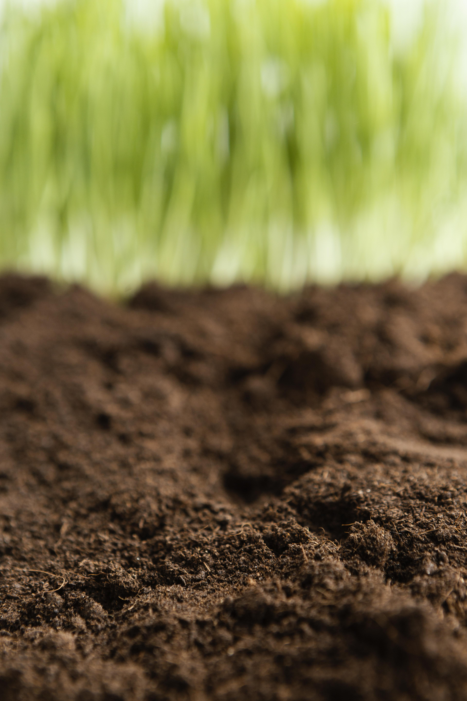
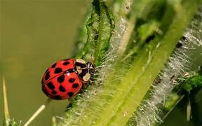
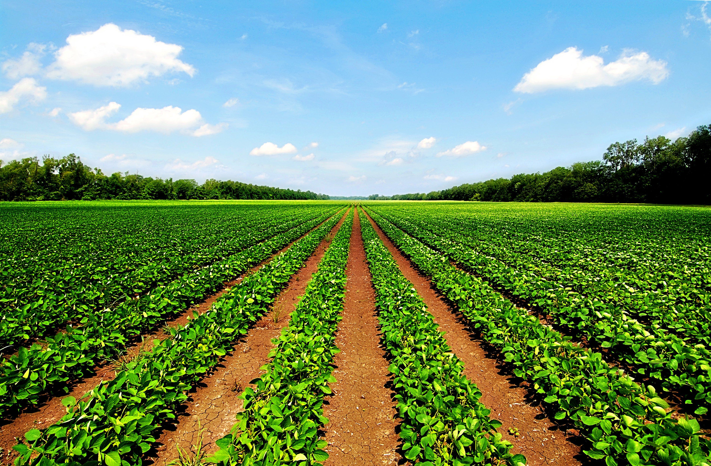
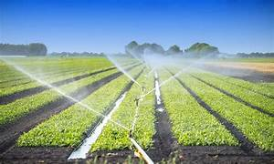

The
CropMessenger
~ Your trusted companion, guiding agricultural success
About Us
KrashiSahayak is a smart agriculture platform that empowers farmers with real-time data, innovative tools, and personalized support to enhance productivity and ensure sustainable growth. We bridge traditional farming with modern solutions, guiding farmers towards success at every step. With a focus on efficiency and innovation, KrashiSahayak offers tailored resources to meet the unique needs of every farmer. Our goal is to drive agricultural success by combining technology with trusted expertise.
We provide many services including,
- 
Soil Analysis
Provides detailed insights into soil health and composition, by analyzing key factors such as pH levels, nutrient content, and soil texture, we help optimize soil conditions for maximum yield and sustainable farming practices
- 
Crop Disease Detection
Service uses advanced technology to identify and diagnose plant diseases early and provide actionable insights and recommendations to prevent the spread of diseases, minimize crop loss, and enhance overall farm health."
-
weather Prediction
Provide accurate, localized forecasts to help farmers plan their activities effectively. By providing timely updates on temperature, precipitation, and other climatic conditions, we mitigate weather-related risks."
- 
Crop Yield Prediction
By analyzing historical data, weather patterns, and current crop conditions, we provide actionable insights to help farmers make informed decisions and optimize their harvest outcomes.
- 
Smart Irrigation
Optimize water usage based on real-time soil moisture data and weather forecasts. By automating irrigation schedules and adjusting water delivery, we help farmers conserve resources, reduce costs, and enhance crop health and productivity.
- SMS Update
- Image Processing
- Data Analysis
- Soil Analysis
- Crop Disease Detection
- Smart Irrigation
- Weather Prediction
- Crop Prediction
- Home
- About
- Services
- Contact
-
-


- Mobile: +91-818895XXXX
- Email: krashisahayk1111@gmail.com
KrashiSahayak
©2024krashisahayak.com